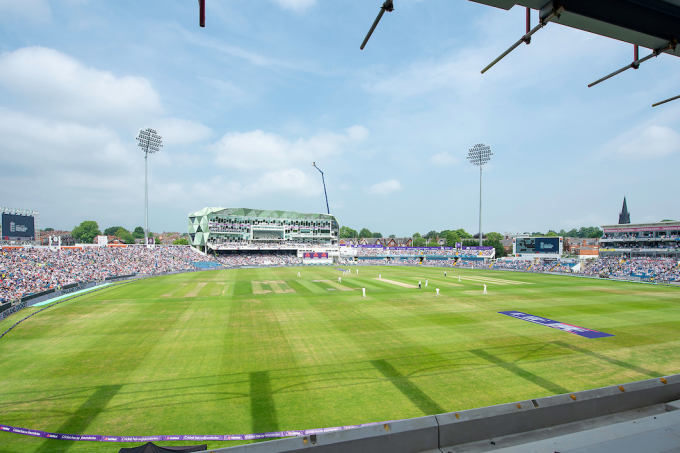

The History of Yorkshire Cricket Club

Established over 150 years ago, the history, tradition and passion of Yorkshire cricket is renowned throughout the world.
No other county in the history of the game has won more trophies and produced more players for England.
This is where you can learn everything you need to know about one of sports greatest institutions.
International Moments of Magic

Headingley Cricket Ground has been home to The Yorkshire County Cricket Club since 1890 and a venue for Test Matches since 1899.
From the staging the England versus Australia Test Match in 1899 to last summer’s Test Match between England and Pakistan at the venue, Headingley has hosted 77 Tests. and 36 one-day internationals.
The first of 105 Test centuries made at the ground was scored by the Englishman Stanley Jackson against Australia in 1905.
The Australian Donald Bradman holds the record for the highest Test innings at Headingley. Bradman’s innings of 334 not out, scored in 1930, was also the highest of his Test career. Bradman made a second triple century at Headingley when he scored 304 in 1934. The only other player to score a triple century at the ground is the Englishman John Edrich who made 310 not out against New Zealand in 1965.
Geoffrey Boycott and Donald Bradman are the only players to have scored four Test centuries at Headingley. Shai Hope is the only batsman to score centuries in each innings of a Test. No player had managed this in any if the previous first-class matches at the ground.
Fourteen ODI centuries have been scored at the ground, the first was by the Australian Graeme Wood in 1981. The Sri Lankan Sanath Jayasuriya holds the record for the highest ODI innings at the ground. Jayasuriya scored 152 from 99 deliveries against England in 2006. The highest score by an Englishman is 128 which was made by Robin Smith in 1990.
Headinley's History
Since the first recorded first-class match to be played at Headingley in September 1890 – a three-day clash between the North and the Australians – the ground has become one of the game’s great venues.
Headingley, or Emerald Headingley as it is now known for sponsorship reasons, has played host to many iconic moments both at domestic and international level.
Yorkshire played matches across the county long before 1890, with their headquarters initially in Sheffield until the move to Leeds in 1903, but they have gone on to win 32 outright County Championship titles whilst playing at Headingley.
The ground has played host to some of England’s greatest ever Test victories, 1981 springs to mind when Ian Botham sparked a remarkable comeback win over the Aussies, which ultimately ended in an Ashes series win.
The late Sir Donald Bradman broke the world record for an individual Test score with 334 in July 1930, with the Australian legend remaining the highest Test run-scorer at Headingley with 963.
Bradman just pipped our own Geoff Boycott to that title. Boycott scored 897 Test runs at Headingley, including his hundredth first-class hundred in the 1977 Ashes Test.
White Rose great Fred Trueman is the current leading Test wicket-taker at Headingley with 44, although Stuart Broad has yet to retire and has 34.
Headingley’s first ever one-day International was a thriller when, in 1973, England beat the great West Indies side by one wicket chasing 182.
Back to Test cricket for a second, and it was a shock to many that when West Indies batsman Shai Hope scored two centuries in a Test win over England in 2017, he was the first man to post two hundreds in any first-class match at the venue.With the good comes the bad.
In August 1975, an Ashes Test had to be abandoned when groundsman George Cawthray discovered that campaigners calling for the release from prison of George Davis – who had completed an armed robbery at the London Electricity Board a year or so earlier – had dug holes in the pitch and poured oil over one end of the wicket.
Headingley has been central to Yorkshire’s domination of English cricket, most notably their seven Championship titles in the 1930s, with many a star name wearing the White Rose, be it Sachin Tendulkar or Darren Lehmann
Away from cricket, in 2015, the London band Madness played a concert at the ground in front of a crowd of 7,500.
A group of businessmen and sports lovers, led by Lord Hawke, initially bought the Headingley site for £25,000, with its use for six sports; cricket, rugby, football, tennis, bowls and cycling.
A fire on Good Friday in 1932 ravaged the main stand, in use for both cricket and rugby, hence a rebuild.
Further redevelopments have come and gone across the years, including the dressing room and club offices which were housed in the North East corner where the main scoreboard currently sits.
In 2005, Yorkshire became sole owners of Headingley, purchasing it from the Leeds Cricket, Football and Athletic Company which Hawke and his partners had set up all those years ago. It came on the back of financial support from Leeds City Council and club chairman Colin Graves.
In 2010, a new pavilion would be built in the North West corner in conjunction with Leeds Metropolitan University. It would be known as the Carnegie Pavilion, in conjunction with an existing sponsorship arrangement which had seen the ground named Headingley Carnegie in 2006.
The pavilion would not only house the players changing rooms, taking them from the Football Stand End, but also the club’s offices and also some University lecture rooms.
The cost of the new building was £21m, of which Yorkshire CCC would contribute approximately £7m.
In 2013, the ground reverted to just Headingley before Yorkshire and Leeds Rhinos Rugby agreed a deal with the Emerald Group for stadium naming rights in mid-2017.
It fell in line with the latest £40m redevelopment plan for the venue, which will see the old Football Stand transformed ahead of the 2019 summer when the ground will host four World Cup matches and an Ashes Test.
The Team
3 Adil Rashid
4 Josh Sullivan
6 Matthew Waite
7 Matthew Fisher
8 Dom Leech
9 Adam Lyth
10 Ben Coad
12 Jonathan Tattersall
15 David Willey
17 Steven Patterson
18 George Hill
19 Gary Ballance
21 Johnathan Bairstow
22 Harry Duke
23 James Wharton
24 Jack Shutt
27 Harry Sullivan
29 Dawid Malan
30 Ben Birkhead
31 William Fraine
32 Tom Kohler-Cadmore
40 Tom Loten
44 Jordan Thompson
46 Finn Allen
47 Dom Bess
49 Shadab Khan
66 Joe Root
68 Will Luxton
77 Matthew Revis
88 Harry Brook
97 Haris Rauf